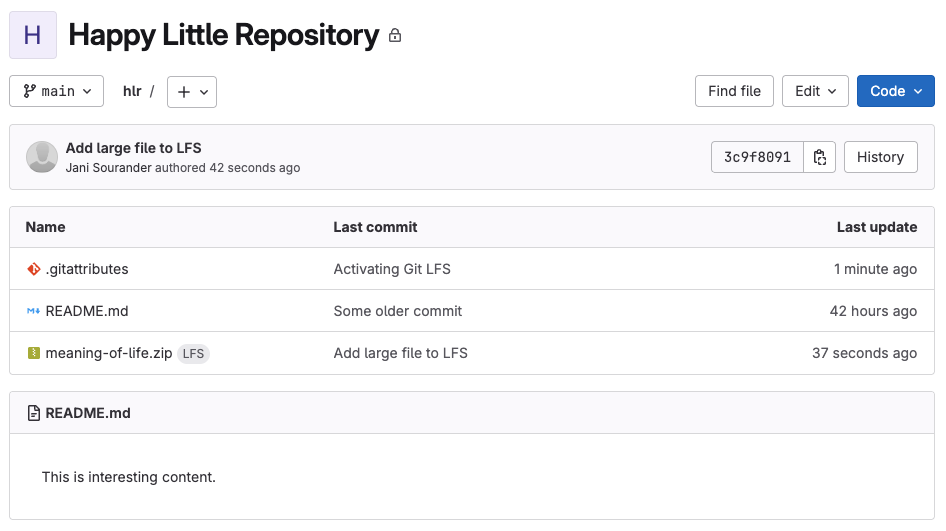

GitLab: LFS
Warning
Huomaa, että tämä ohje ei GitLab-aloittelijoita varten. Ethän lähetä GitLabiin jättitiedostoja ellei jollakin kurssilla se ole suositeltu tapa. Tämä ohje on tarkoitettu niille, jotka ymmärtävät Gitin peruskäytön ja haluavat laajentaa osaamistaan suurten tiedostojen hallintaan GitLabissa. Tämä voi olla aiheellista esimerkiksi Datasta tekoälyyn -kurssin projekteissa, joissa käsitellään suuria (mutta ei valtavia) datatiedostoja.
Etene vain jos tiedät, että sinun kuuluu käyttää Git LFS:ää.
Git LFS (Large File Storage) on Gitin laajennus, joka mahdollistaa suurten tiedostojen tallentamisen erilliseen palveluun Git-repositorion ulkopuolelle. Tämä on hyödyllistä, koska Git ei ole optimoitu käsittelemään suuria binääritiedostoja tehokkaasti. Lue alta pikaohjeet ja tutustu ihmeessä myös komennon alkuperäiseen dokumentaatioon vaikkapa Ubuntu Manpages: git-lfs kautta.
Git LFS:ään lisättävillä tiedostoilla on maksimikoot, jotka kukin Git hosting service määrittelee itse. Alla olevasta taulukosta näet rajoitukset (siltä osin kuin ovat tiedossa).
repo.kamit.fi |
gitlab.dclabra.fi |
|
|---|---|---|
| Maksimikoko per tiedosto | ?? MiB | 1 000 MiB |
| Maksimikoko per repositorio | ?? MiB | 5 000 MiB |
LFS Käyttöönotto
Asenna Git LFS
Git LFS on asennettavissa useilla eri tavoilla riippuen käyttöjärjestelmästäsi. Alla on ohjeet yleisimmille alustoille:
Windows-käyttäjillä pitäisi jo olla tämä asennettuna, koska:
Git LFS is included in the distribution of Git for Windows. Alternatively, you can install a recent version of Git LFS from the Chocolatey package manager.
Jatka siis suoraan seuraavaan vaiheeseen.
Tässä on oletus, että sinulla on Homebrew asennettuna, koska se neuvottiin aiemmin tässä oppaassa. Aja siis seuraava komento:
Näin simppeliä se on macOS:ssä.
Ubuntun omat APT-repositoriot päivittyvät hitaasti, joten on suositeltavaa käyttää virallista Git LFS -pakettien lähdettä, kuten selitetty osoitteessa gh:git-lfs/INSTALLING.md. Tarkista ohje alkuperäisestä lähteestä. Tässä kuitenkin tiivistetty versio:
Aktivoi Git-clientissa
Tarkista vielä varmuuden vuoksi, että Git LFS on asennettu:
Komento tuostaa Git LFS initialized.-viestin, jos kaikki meni hyvin. Jos pohdit, mihin tuo asentuu, niin kannattaa kurkata tiedostoa ~/.gitconfig eli sinun globaalin tason konfiguraatiotiedostoa.
Käyttö
Tiedoston lisääminen LFS:ään
Huomaa, että tiedostoa ei saa lisätä aiempiin committeihin, vaan LFS pitää ottaa käyttöön ennen kuin tiedosto lisätään ensimmäistä kertaa. Jos haluat lisätä esimerkiksi suuren paketin meaning-of-life.zip LFS:ään, käytä seuraavaa komentoa:
Mitä jos...
Mitä jos olet kuitenkin jo lisännyt tiedoston git-repositorioon ennen LFS:n käyttöönottoa? Tällöin sinun täytyy poistaa tiedosto git-historiasta ja lisätä se uudelleen LFS:ään. Tämä on monimutkaista ja vaatii git filter-repo-työkalun käyttöä. Varaa tähän aikaa ja tee se siten, että sinulla on varmuuskopio repositoriostasi, ja kommunikoit tiimin kanssa asiasta, koska tämä muuttaa git-historiaa. Kaikkien tulee kloonata repositorio uudelleen tämän jälkeen. Aivan kaikkien. Älä siis tee tätä kevyin perustein.
Jos repositorio on verrattain tuore, voi olla helpompaa tuhota koko versionhallinta (rm -rf .git), tuhota GitLabista koko projekti ja aloittaa versionhallinta alusta (git init).
Tämä on yksi niistä syistä, miksi git status kannattaa aina tarkistaa ennen git add-komentoa. Jos lisäät plöröä gittiin, kärsit myöhemmin.
TÄRKEÄÄ! Tässä välissä Git LFS luo projektisi juureen .gitattributes-tiedoston, joka sisältää tiedostojen määrittelyyn liittyviä asetuksia – tässä tapauksessa LFS:n asetuksia. Tämä tiedosto pitää commitoida ja puskata GitLabiin viimeistään samassa commitissa, jossa lisäät LFS-tiedoston ensimmäistä kertaa. Turvallisinta on tehdä se varmuuden vuoksi heti erillisessä commitissa ennen kuin lisäät LFS-tiedoston. Käytä siis seuraavia komentoja:
Tiedosto .gitattributes sisältää yllä ajetun komennon osalta rivin:
Tämän jälkeen voit lisätä kyseisen tiedoston aivan kuin LFS ei olisi käytössä. Tiedostoa ei lisätä git objekteihin, vaan Git LFS hoitaa tiedoston tallennuksen ja versioinnin erikseen tavalla, joka on optimoitu suurille tiedostoille.

Kuva 1: Tiedostossa näkyy LFS-tagi GitLabin tiedostolistauksessa.
Voit käyttää myös jokerimerkkejä, kuten *.zip, jos haluat seurata kaikkia ZIP-tiedostoja LFS:llä. Tutustu lisää git lfs track --help-komennolla.
Tiedoston poisto LFS:stä
# Poista tiedosto siten että git tietää poistosta
git rm meaning-of-life.zip
# Poista tiedosto seurannasta
git lfs untrack meaning-of-life.zip
# Commit ja push
git add .
git commit -m "Meaning of life deleted"
git push
Repositorion kloonaus LFS-tiedostoineen
Kun kloonaat repositorion, jossa on LFS-tiedostoja, käytä normaalia git clone -komentoa. Tässä on oletus, että kyseisellä tietokoneella on Git LFS aktivoitu onnistuneesti. Jos ei, repositoriosta kloonautuu vain LFS-tiedostojen "pointer"-tiedosto. Tiedosto on valitettavasti oikean niminen, joten se on sinänsä vaikea tunnistaa. Tämän voi havaita seuraavin tavoin:
- Tarkista, onko Git LFS asennettuna ja aktivoituna komennolla
git lfs versionjagit lfs install. - Tarkista tiedoston koko. Jos se on hyvin pieni (esim. 135 tavua), kyseessä on todennäköisesti LFS-pointer-tiedosto.
-
Tarkista tiedoston sisältö
head -n 3 <tiedosto>-komennolla. Jos näet jotain tällaista:niin kyseessä on LFS-pointer-tiedosto.